图片
IMG_2048.jpg
Vacation.jpg
截图_1032.png
界面截图.png
文档
Report.pdf
会议纪要.docx
季度报告.docx
排期表.xlsx
设计规范.pdf
通讯录.xlsx
项目
已锁定
参考链接
设计稿
项目资料
Project.zip
产品演示.pptx
培训材料.pptx
下载
产品宣传片.mp4
图标素材.zip
备份_0928.zip
备份文件.zip
安装说明.txt
待办清单.txt
Vacation.jpg
Report.pdf
Project.zip
桌面，不该是这样的。
文件越堆越多，找东西全靠运气。
给文件，几个格子。
拖进去，就整理好了。
文件留在桌面原路径，只是收进了该在的地方。
一个格子，随你摆布。
移动它。
缩放它。
收起来。
锁上它。
改个名字。
让桌面，成为你的。
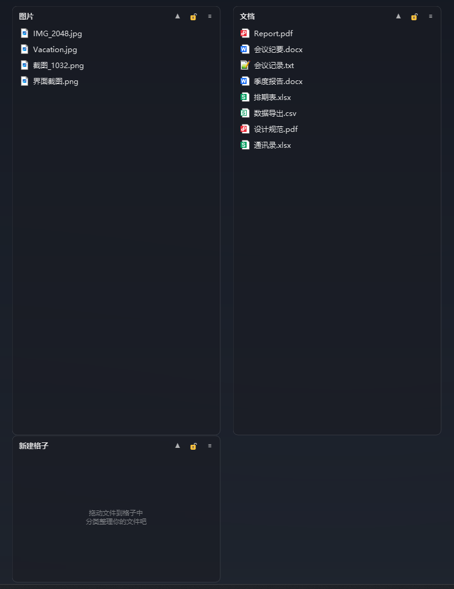
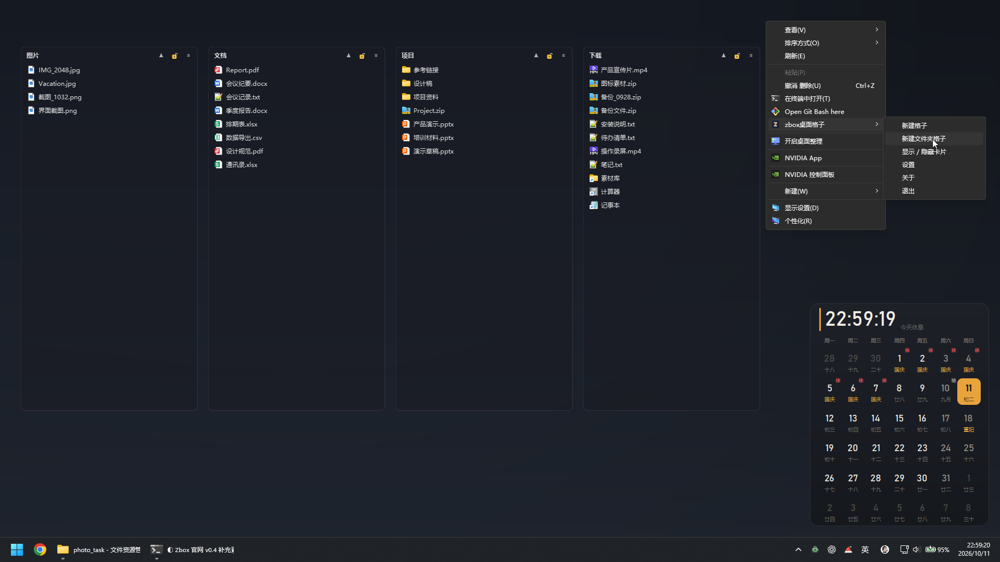
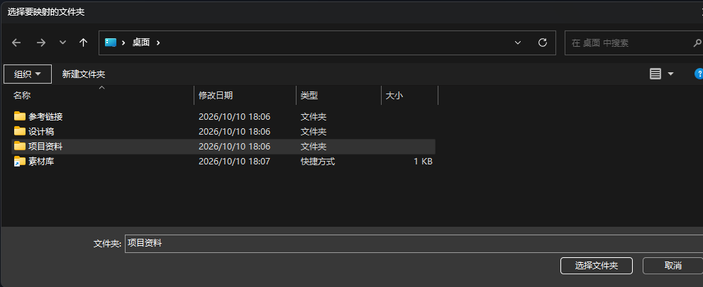
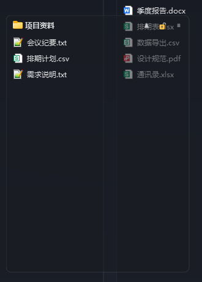
快速上手
桌面空白处，右键。
「新建格子」，就这么出现了。
要映射真文件夹？同一个菜单。
选一个目录。
格子与目录，实时联动。
建个格子，一次右键的事。
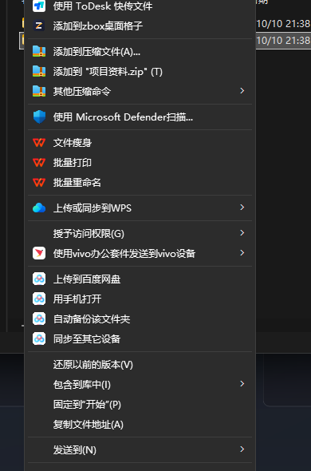
图片
IMG_2048.jpg
Vacation.jpg
截图_1032.png
界面截图.png
文档
Report.pdf
季度报告.docx
排期表.xlsx
设计规范.pdf
我的项目
项目资料
Project.zip
产品演示.pptx
下载
产品宣传片.mp4
备份文件.zip
安装说明.txt
想要一个干净的桌面？
双击。
一切如旧。
格子、面板、文件，都在。
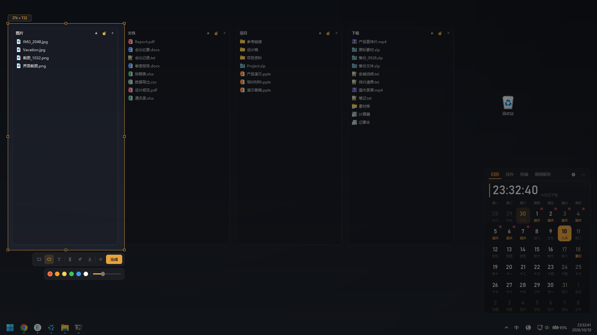
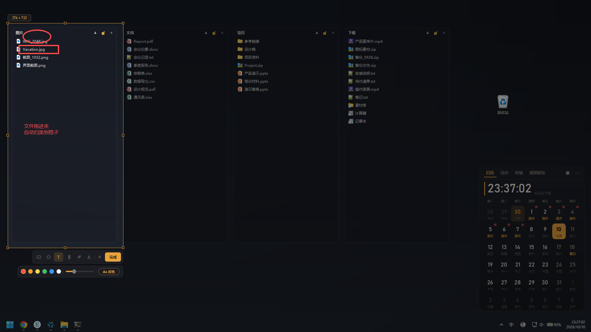
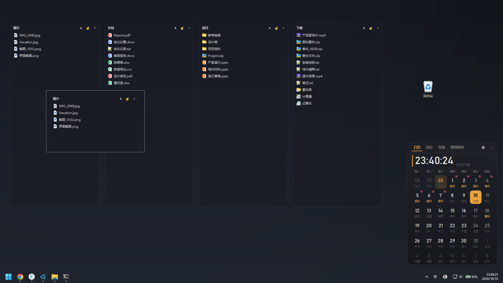
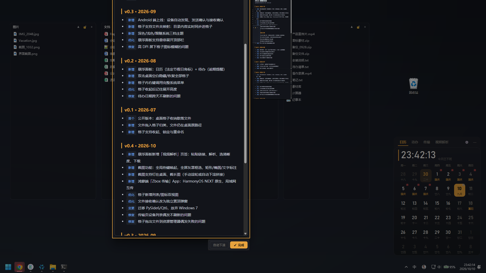
截图
截屏，从一把热键开始。
圈一圈，写两句。
钉在桌面，随用随看。
长页面？自动滚着截。
截图、标注、钉在桌面——全局热键唤起，键位自定义。
工作空间
不止是整洁的桌面。
日历、待办、专注——让桌面成为一天开始的地方。
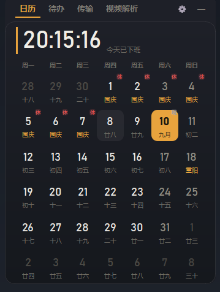
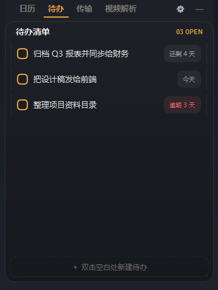
- 法定节假日「休 / 班」角标
- 农历与节日副标题
- 截止 tag：逾期标红 · 今天 · 还剩 N 天
- 双击空白新建待办
- 勾选完成，置灰沉底
图片
Vacation.jpg
截图_1032.png
界面截图.png
下载
产品宣传片.mp4
备份文件.zip
IMG_2048.jpg
日历待办传输视频解析
附近的设备
手机Mate 90 Pro在线
选择文件发送（可拖）
传输记录
Vacation.jpg · 发送至 Mate 90 Pro
完成
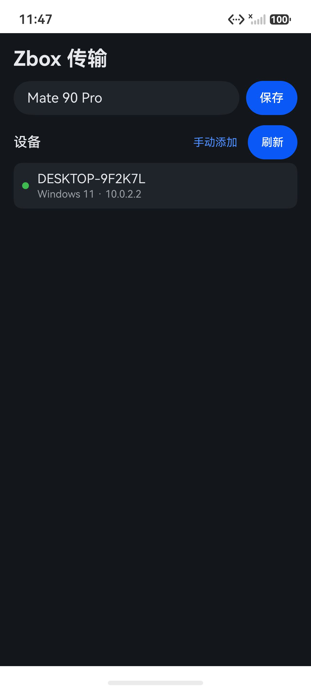
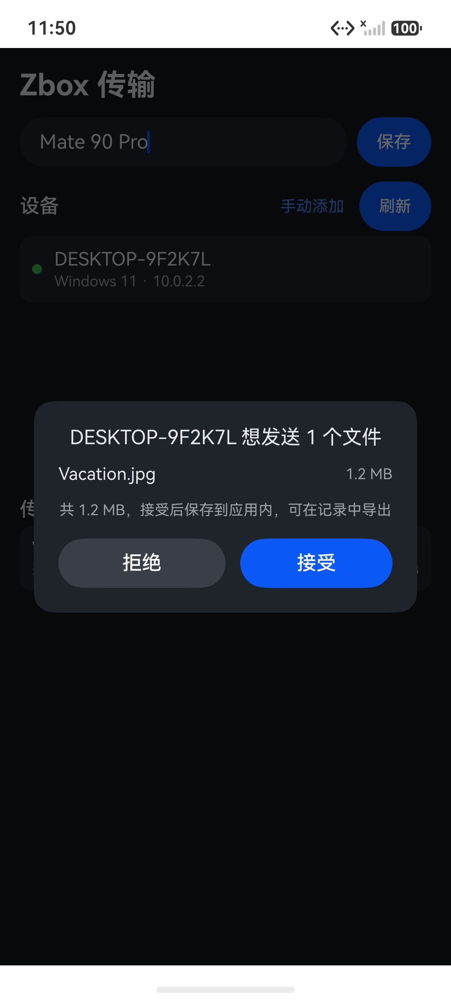
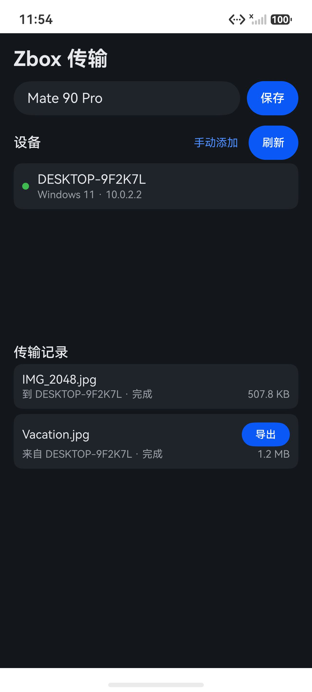
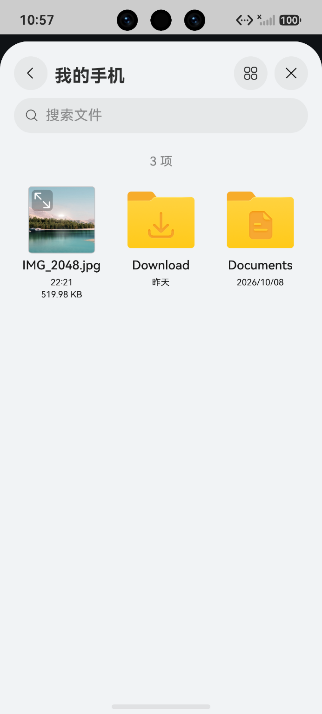
Vacation.jpg
IMG_2048.jpg
收到文件
来自 Mate 90 Pro · 1 个文件 · 共 2.4 MB
IMG_2048.jpg
保存到：下载\Zbox更改…
传输协议参照 LocalSend v2 · 私有实现（与官方 LocalSend 不互通）
Zbox 0.4 · 三端互传
文件，随时流动。
Vacation.jpg，已到手机。
反过来，也一样。
文件，随时流动。
局域网互传 · 手动启用 · 接收需确认
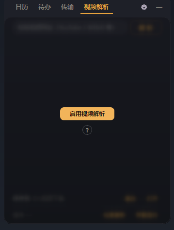
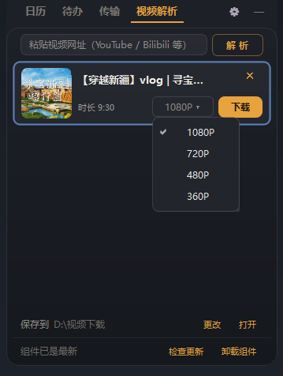
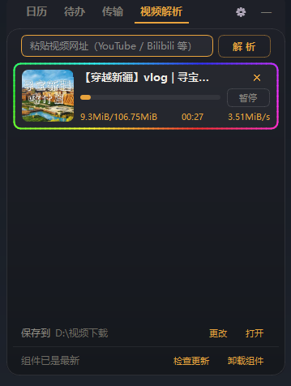
视频解析
面板里，多了个视频解析。
粘贴链接，解析出清晰度。
多任务并行，断点续传。
下好了，直接打开。
YouTube、Bilibili 等 · 最高 4K 视源站 · 组件本地运行 · 默认关闭。
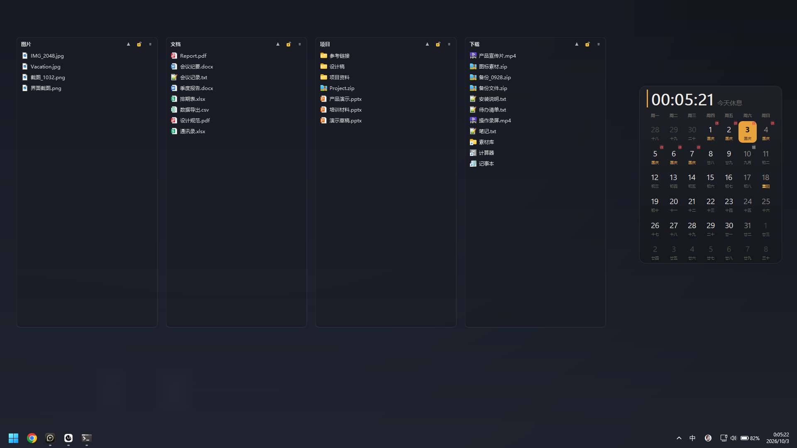
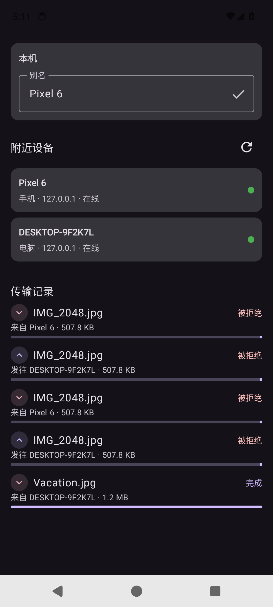
这，就是 Zbox。
最新版本
Zbox 0.4
Windows、Android、鸿蒙，同在一个局域网。
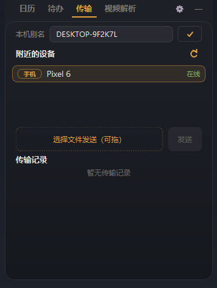
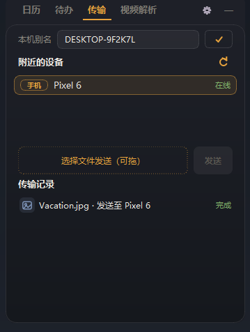
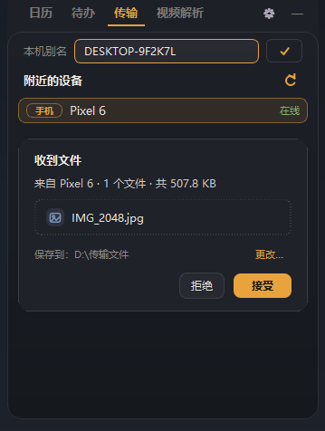